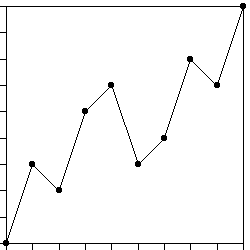

| 8. (a) All the dti are 1/9; dY1 = dY3 = dY5 = dY7 = dY9 = 1/3, and dY2 = dY4 = dY6 = dY8 = 1/9. |
| (b) All the dti are equal, not all the dYi are equal, so
not all the Hi = |
| (c) To find the Trading time generators, first solve the equation |
| |dY1|D + |dY2|D + ... + |dY9|D = 1 |
| Here this becomes |
| 5((1/3)D) + 4((1/9)D) = 1 |
| The solution is D = Log((-5 + √(41))/8)/Log(1/3). |
| Then the Trading time generators are dTi = |dYi|D. |
| These take on two values: |
| (1/3)D = (-5 + √(41))/8 |
| (These are dT1 = dT3 = dT5 = dT7 = dT9.) and |
| (1/9)D = ((-5 + √(41))/8)2 |
| These are dT2 = dT4 = dT6 = dT8. |
|  |
Return to Homework 7 Practice.